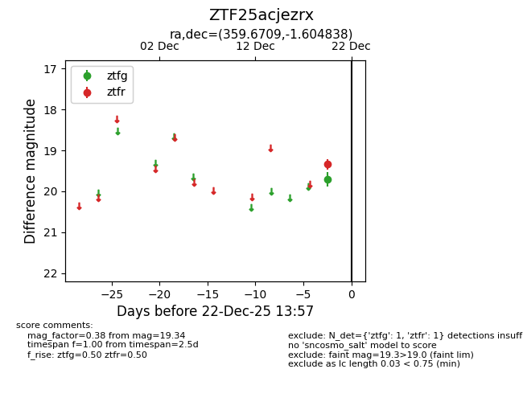
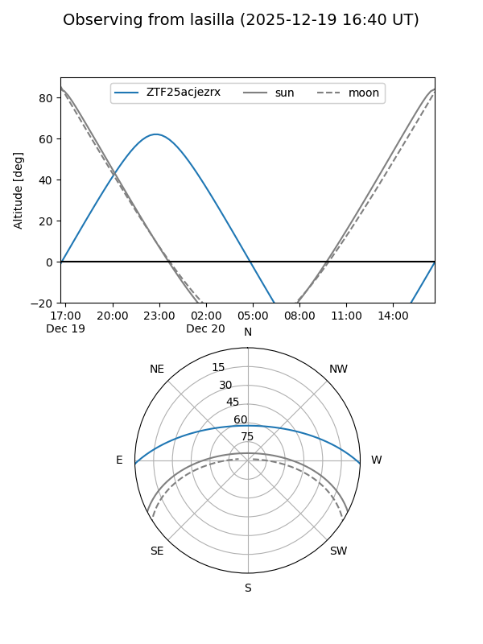
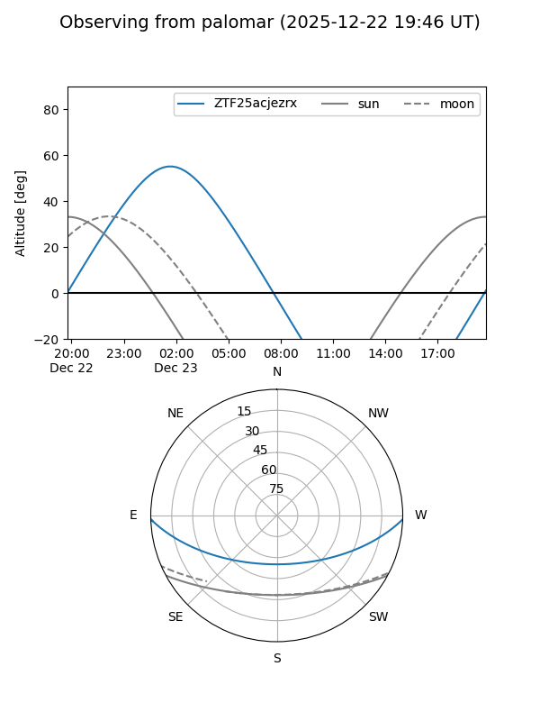

ZTF25acjezrx
Target ZTF25acjezrx at 2025-12-31 18:00
Aliases and brokers:
FINK: link
Lasair: link
ALeRCE: link
alt names
ZTF25acjezrx (ztf,fink_ztf)
Coordinates:
equatorial (ra, dec) = 359.6709,-1.60484
equatorial (HMS+DMS) = 23:58:41.01,-01:36:17.42
galactic (l, b) = (94.3637,-61.51529)
Flags:
Photometry:
last ztfg=19.70, ztfr=19.34
1 ztfg, 1 ztfr detections
Lightcurve

Visibility


Additional plots